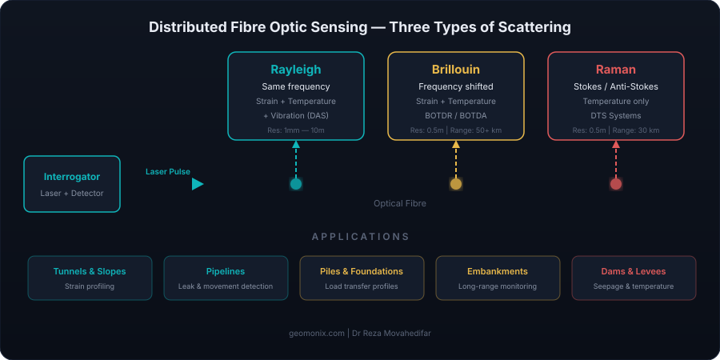

How Distributed Fibre Optic Sensing Works: The Physics Explained Simply

You've heard that fibre optic sensing can turn a single cable into thousands of sensors. But how does light inside a glass fibre actually measure strain, temperature, or vibration? This article explains the physics in plain language — no optics degree required.
The Basic Principle: Light Tells You What's Happening
An optical fibre is a thin strand of glass (about 125 μm in diameter — thinner than a human hair) that guides light along its core through total internal reflection. In telecommunications, this light carries data. In sensing, the light itself is the data.
When a pulse of laser light travels through a fibre, most of it goes straight through. But a tiny fraction — less than 0.001% — is scattered backwards by the glass molecules. This backscattered light carries information about the local conditions (temperature, strain, vibration) at every point along the fibre.
By analysing what comes back and when it arrives, an interrogator unit can determine what's happening at every metre (or even every millimetre) along a fibre that could be kilometres long. This is the essence of distributed fibre optic sensing.
Time-of-Flight: Knowing Where
The "distributed" part relies on a simple concept: the speed of light is known. When a short laser pulse enters the fibre, the interrogator starts a clock. Light scattered from a point 1 km away takes longer to return than light scattered from a point 100 m away. By measuring the arrival time of backscattered light, the system calculates exactly where along the fibre each measurement comes from.
This is fundamentally the same principle as radar (which uses radio waves) or sonar (which uses sound waves). In fibre optics, it's called Optical Time-Domain Reflectometry (OTDR) — and it's the foundation of all distributed sensing systems.
The spatial resolution (how closely spaced the measurements are) depends on the pulse width: a shorter pulse gives finer resolution but weaker signal. This is a fundamental trade-off in all DFOS systems.
Three Types of Scattering: What You Measure
Not all scattered light is the same. When photons interact with the glass molecules, three distinct types of scattering occur, each sensitive to different physical quantities. Understanding these is key to choosing the right DFOS technology for your application.
1. Rayleigh Scattering — The Strongest Signal
Rayleigh scattering occurs when light interacts with tiny inhomogeneities in the glass structure (density fluctuations frozen in during manufacturing). The scattered light has the same frequency as the input light — it's elastic scattering.
Every fibre has a unique, random pattern of these inhomogeneities — like a fingerprint. When the fibre is stretched or heated, this pattern shifts slightly. By comparing the current pattern to a baseline, the system can detect changes in strain or temperature with extraordinary precision.
Key technology: Optical Frequency Domain Reflectometry (OFDR) exploits Rayleigh scattering to achieve spatial resolutions as fine as 1 mm over distances up to ~70 m, or ~1 m resolution over several kilometres. This makes it the highest-resolution distributed sensing technology available.
Also used in: Distributed Acoustic Sensing (DAS), which measures vibrations and acoustic signals by detecting rapid changes in the Rayleigh backscatter pattern. DAS is widely used for seismic monitoring, pipeline surveillance, and perimeter security.
2. Brillouin Scattering — The Workhorse
Brillouin scattering occurs when light interacts with acoustic phonons (sound waves) propagating through the glass. Unlike Rayleigh scattering, the scattered light is shifted in frequency — this shift is called the Brillouin frequency shift, and it's directly proportional to both strain and temperature.
At room temperature in standard telecom fibre, the Brillouin frequency shift is approximately 10.8–11.0 GHz. When the fibre is stretched, this frequency increases by about 0.05 MHz per microstrain. When heated, it increases by about 1.1 MHz per °C. By measuring this shift at every point along the fibre, you get a continuous profile of strain and/or temperature.
Key technologies:
- BOTDR (Brillouin Optical Time-Domain Reflectometry): Uses a single-ended measurement — light goes in one end and scattered light is measured from the same end. Simpler installation but lower signal-to-noise ratio. Range up to 50+ km.
- BOTDA (Brillouin Optical Time-Domain Analysis): Uses a two-ended measurement with a pump pulse from one end and a continuous probe wave from the other. Stimulated Brillouin scattering amplifies the signal, giving higher accuracy. Requires access to both ends of the fibre.
Brillouin-based systems are the workhorse of geotechnical monitoring because they offer a practical balance of range (up to 50+ km), spatial resolution (0.5–1 m), and strain/temperature accuracy.
3. Raman Scattering — Temperature Specialist
Raman scattering occurs when light interacts with molecular vibrations in the glass. It produces two scattered components:
- Stokes component — shifted to a lower frequency (longer wavelength). Its intensity is relatively insensitive to temperature.
- Anti-Stokes component — shifted to a higher frequency (shorter wavelength). Its intensity is strongly dependent on temperature.
By measuring the ratio of Anti-Stokes to Stokes intensity, the system calculates the temperature at each point along the fibre. Crucially, Raman scattering is insensitive to strain — which means you get a pure temperature measurement without cross-sensitivity issues.
Key technology: Distributed Temperature Sensing (DTS) systems use Raman scattering and are widely deployed for:
- Pipeline leak detection (water or gas leaks cause local temperature changes)
- Power cable hot-spot monitoring
- Fire detection in tunnels
- Dam and levee seepage monitoring
- Geothermal well profiling
Comparison: Which Scattering Type for What?
| Property | Rayleigh | Brillouin | Raman |
|---|---|---|---|
| Signal strength | Strongest | Medium | Weakest |
| Measures strain? | Yes | Yes | No |
| Measures temperature? | Yes | Yes | Yes (pure) |
| Measures vibration? | Yes (DAS) | No | No |
| Typical range | 70 m (OFDR) to 40 km (DAS) | Up to 50+ km | Up to 30 km |
| Best spatial resolution | 1 mm (OFDR) | 0.5 m | 0.5 m |
| Cross-sensitivity | Strain/temperature coupled | Strain/temperature coupled | Temperature only |
| Best for | High-res structural, vibration/acoustic | Long-range geotechnical | Temperature profiling, leak detection |
The Temperature-Strain Cross-Sensitivity Problem
One of the biggest practical challenges in DFOS is that both Brillouin and Rayleigh scattering are sensitive to both strain and temperature simultaneously. If your Brillouin frequency shift changes, is it because the ground moved (strain) or because the temperature changed seasonally?
Engineers solve this in several ways:
- Dual-cable approach: Install two fibres — one bonded to the structure (measures strain + temperature) and one in a loose tube (measures temperature only, as it's free to move). Subtract the temperature effect to isolate strain.
- Combined Brillouin + Raman: Use Brillouin for strain+temperature and Raman for temperature only. The difference gives you pure strain.
- Reference sections: Leave sections of the fibre in a known, strain-free environment to calibrate the temperature response.
- Hybrid cables: Purpose-built sensing cables with both tight-buffered (strain-sensing) and loose-tube (temperature-only) fibres in a single jacket.
Getting this right is critical for accurate geotechnical monitoring. It's one of the areas where specialist consulting makes the difference between useful data and misleading numbers.
Inside the Interrogator: How Measurements Are Made
The interrogator unit is the "brain" of a DFOS system. It's a sophisticated opto-electronic instrument that:
- Generates precisely controlled laser pulses (or swept-frequency signals for OFDR)
- Detects the faint backscattered light using photodetectors
- Processes the signals to extract strain, temperature, or vibration at every point
- Outputs the data as a spatial profile (distance vs. measurand)
Modern interrogators can complete a full measurement along several kilometres of fibre in seconds to minutes (for Brillouin/Raman) or thousands of times per second (for DAS). They typically output data via Ethernet or USB for further processing.
Major manufacturers include: Luna Innovations (OFDR), Neubrex (Brillouin), Omnisens (Brillouin), Silixa (DAS/DTS), AP Sensing (DTS), Yokogawa (BOTDR), and FBGS (FBG interrogators). Costs range from £30,000 for basic DTS units to £150,000+ for high-end Brillouin analysers.
From Raw Signal to Engineering Data
Raw DFOS data is not directly useful to an engineer. It requires processing through several steps:
- Calibration: Converting frequency shifts or intensity ratios to physical units (microstrain, °C) using calibration coefficients specific to the fibre type and installation.
- Spatial registration: Mapping fibre distance to physical location on the structure. The fibre path is rarely straight — bends, coils, and slack must be accounted for.
- Temperature compensation: Removing the temperature component from strain measurements (as discussed above).
- Noise filtering: Applying moving averages, Savitzky-Golay filters, or wavelet denoising to improve signal quality without losing spatial detail.
- Baseline subtraction: Comparing current measurements to a reference state to identify changes over time.
- Engineering interpretation: Converting strain profiles to displacement, curvature, load, or other meaningful engineering parameters.
This processing pipeline is where Python and MATLAB become essential tools. At GeoMonix, I build automated data processing workflows that take raw interrogator outputs and produce clean, interpretable engineering data — saving hours of manual processing and reducing the risk of errors.
The Fibre Itself: Not All Cables Are Equal
While standard single-mode telecom fibre (SMF-28) can be used for sensing, the cable construction around the fibre is critical for geotechnical applications:
- Tight-buffered cables: The fibre is bonded directly to the protective jacket. Strain in the structure transfers directly to the fibre. Essential for strain measurement.
- Loose-tube cables: The fibre sits loosely inside a gel-filled tube. It can move freely, so it only measures temperature (not strain). Used for temperature compensation and DTS applications.
- Armoured cables: Steel wire or Kevlar armour protects the fibre during installation in harsh environments (backfilling, concrete pouring, directional drilling).
- Flat ribbon cables: Used for surface-bonded applications on structures like tunnel linings, bridge decks, or retaining walls.
- Sensing-specific cables: Purpose-built cables from manufacturers like Solifos, Brugg, or Sensornet that combine multiple fibre types in engineered configurations for specific monitoring applications.
Cable selection is one of the most important decisions in a DFOS monitoring project. The wrong cable can mean poor strain transfer, premature failure, or unusable data. This is an area where getting independent advice before procurement can save significant cost and frustration.
Summary: Why This Matters for Engineers
Understanding the physics behind DFOS helps you:
- Choose the right technology — Brillouin for long-range geotechnical, Rayleigh for high-resolution structural, Raman for temperature
- Specify correctly — spatial resolution, range, accuracy, and measurement speed all depend on the scattering mechanism
- Avoid common pitfalls — temperature-strain cross-sensitivity, wrong cable type, inadequate spatial registration
- Interpret data critically — knowing the limitations helps you trust the data where it's reliable and question it where it might not be
In the next article, we'll look at fibre optic cable types and selection in more detail — including installation methods for different geotechnical applications.
Need Help With DFOS for Your Project?
Whether you're specifying a new monitoring system, reviewing a contractor's proposal, or trying to make sense of existing DFOS data, I can help. With hands-on research experience and a £25,000 ICE-funded fibre optic monitoring project, I bring both theoretical understanding and practical expertise.